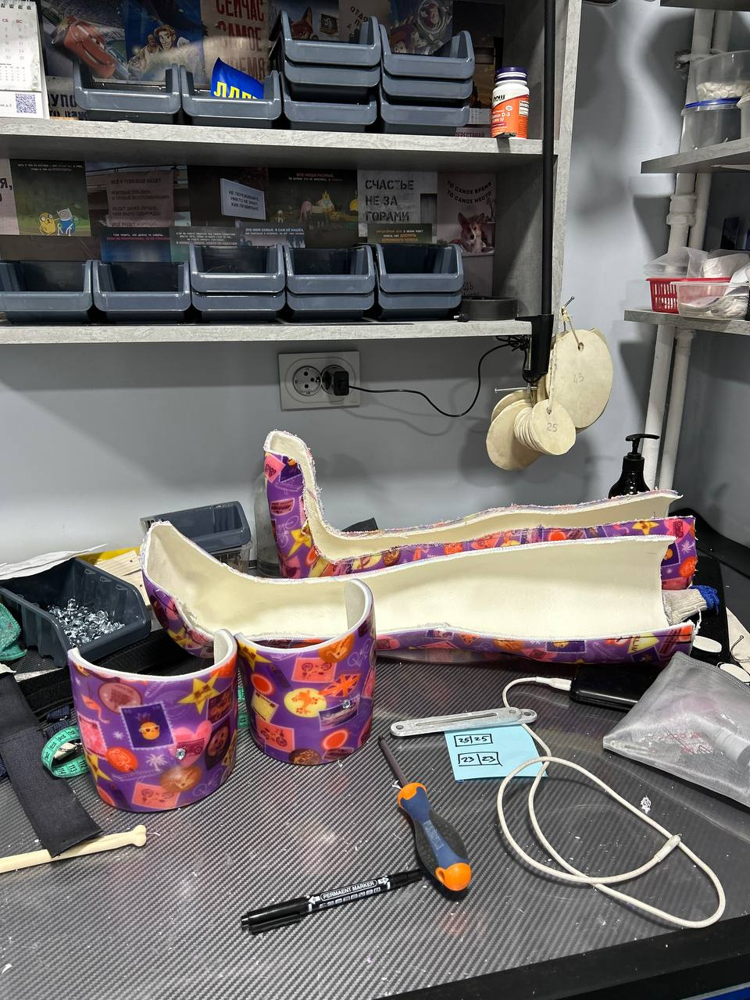
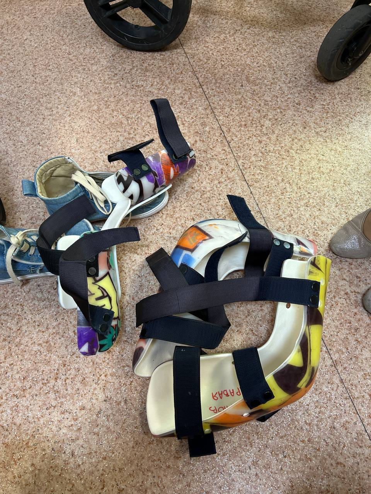
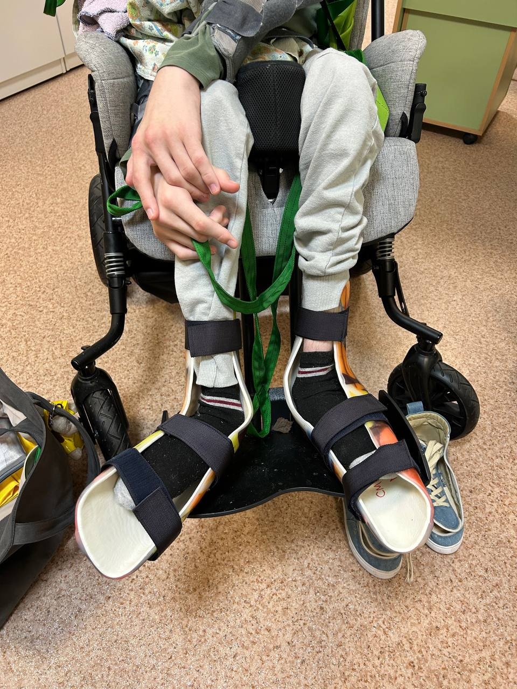
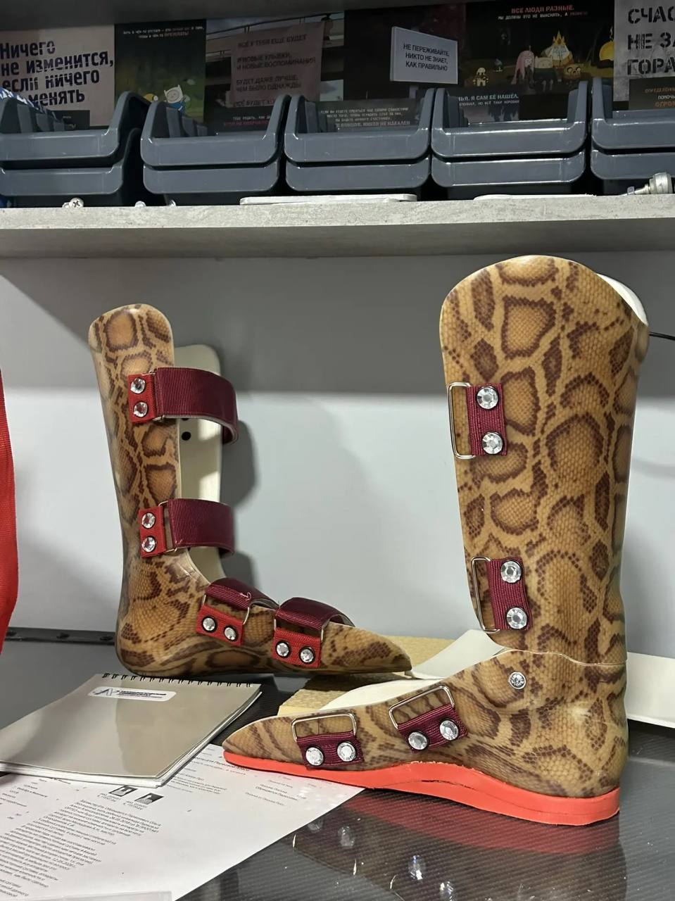
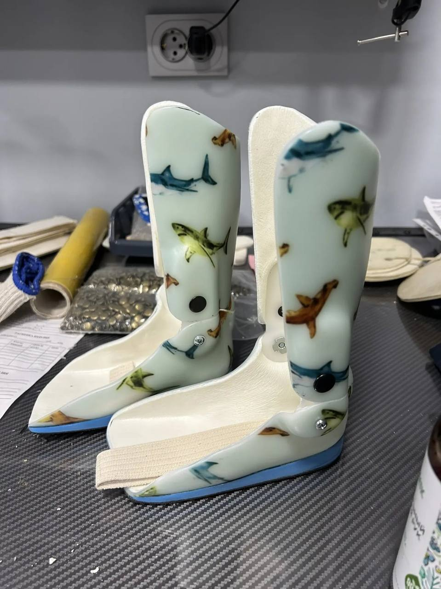
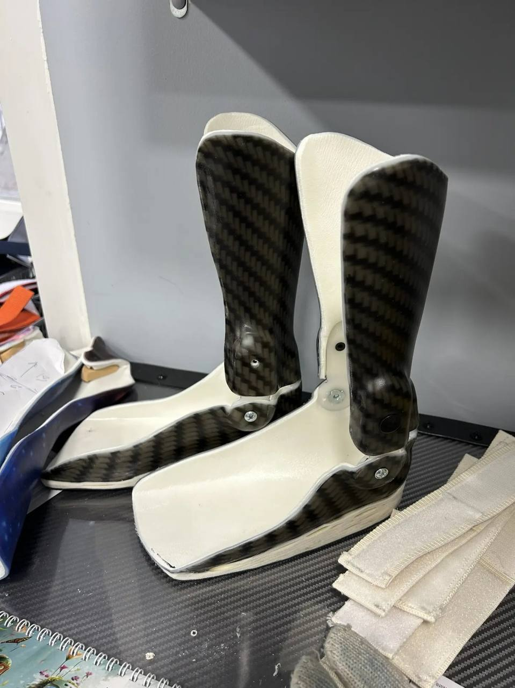
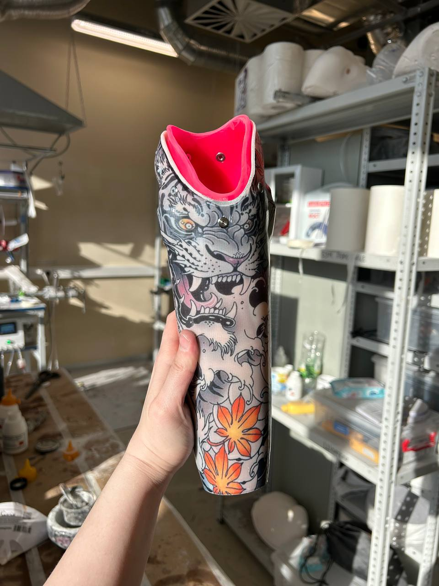
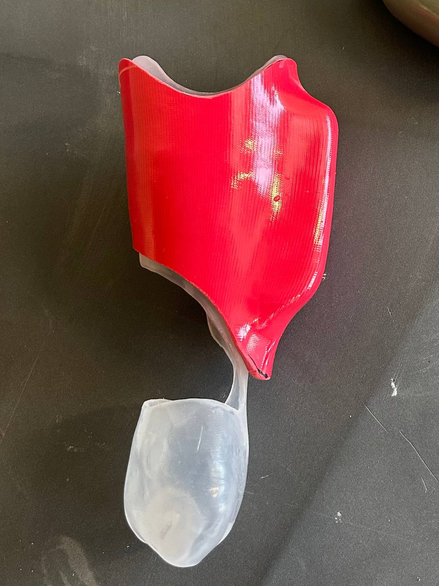
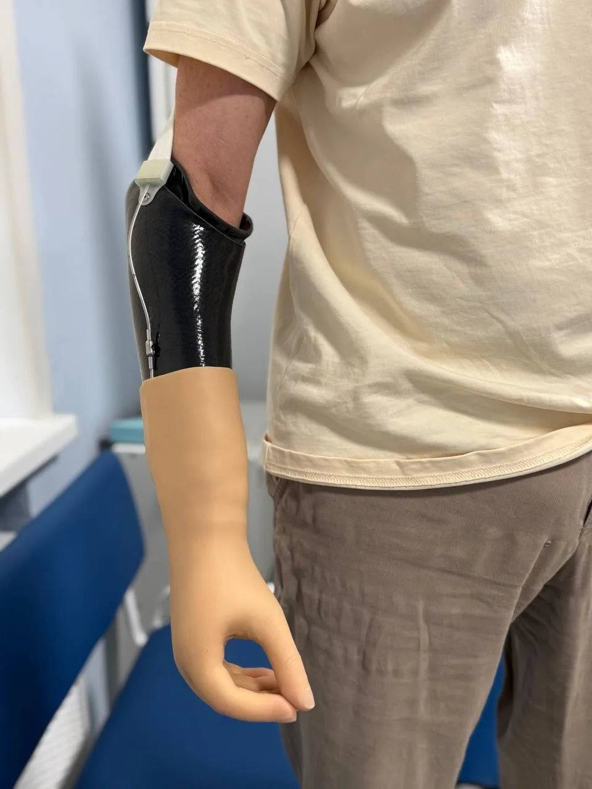

Ищу работу в протезно-ортопедической компании
Полина
Пашинцева
Начинающий техник ПОИ
с опытом работы 3 месяца.
- Локация
- Москва, м. Домодедовская
- Профиль
- ортезирование · протезирование · технические проекты
Ищу работу в протезно-ортопедической компании
Начинающий техник ПОИ
с опытом работы 3 месяца.
02






03



04
05
Сейчас прохожу профессиональную переподготовку по программе «Инженер-технолог по протезированию верхних и нижних конечностей». Программа включает 438 академических часов теории и практики. Диплом получу в сентябре 2026 года.